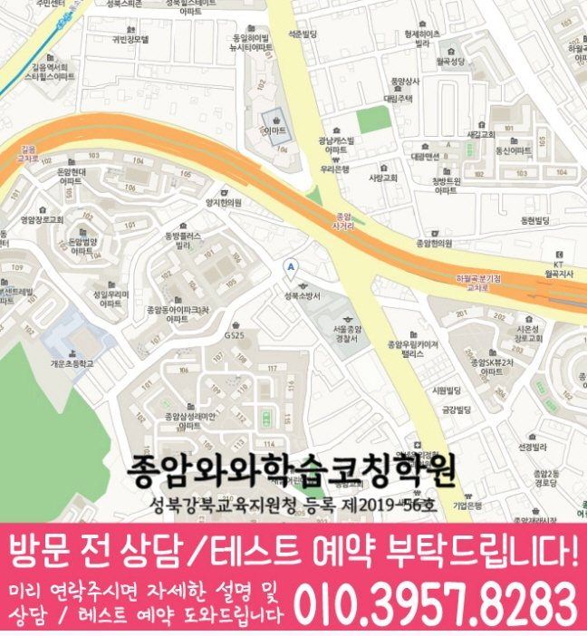

30초 핵심 안내
종암동 고등 영수학원 선택 전 확인할 기준
종암동 고등 영수학원은 종암동에서 고등 영어와 수학 학원을 찾는 가정을 위한 지역 정보 콘텐츠입니다. 제공 주소는 서울 성북구 종암로27길 13 도원프라자 501이고, 학원셔틀, 학생 유형별 우선순위, 시험 대비와 오답 피드백을 정리합니다. 수업 가능 여부와 비용·시간표 등 운영 정보는 종암동 상담 시 확인해야 합니다.
High School English & Math
서울 성북구 종암동에서 고등 영어와 수학 학원을 비교하는 학부모를 위한 안내입니다. 종암동 고등 영수학원의 학생 유형별 학습 설계, 학교 일정 반영, 학원셔틀 체크 기준과 안내 주소를 확인하세요. 제공 주소는 서울 성북구 종암로27길 13 도원프라자 501입니다.
30초 핵심 안내
종암동 고등 영수학원은 종암동에서 고등 영어와 수학 학원을 찾는 가정을 위한 지역 정보 콘텐츠입니다. 제공 주소는 서울 성북구 종암로27길 13 도원프라자 501이고, 학원셔틀, 학생 유형별 우선순위, 시험 대비와 오답 피드백을 정리합니다. 수업 가능 여부와 비용·시간표 등 운영 정보는 종암동 상담 시 확인해야 합니다.
수업 안내 이미지

센터 위치 안내

서울 성북구 종암동에서 고등 영수학원을 찾는다면, 현재 점수만으로 반을 정하기보다 영어와 수학의 오류 원인을 나누어 보는 진단이 우선입니다. 종암동 고등 영수학원의 가상 학생은 고1이며 영어 학습량은 많지만 주간 성취 기준이 모호한 편이고, 동시에 수학 개념은 설명할 수 있어도 낯선 유형에서 첫 식을 세우지 못하는 편이며, 일상에서는 공부 시간은 길어도 과목 전환이 잦아 집중 구간이 짧은 경향이 있습니다. 이런 학생에게는 “과목별 오답을 24시간·일주일 간격으로 다시 확인하기”라는 목표가 필요하고, 학원셔틀도 그 목표를 실제로 돕는지 확인해야 합니다.
서울 성북구 종암동 학생의 영어와 수학을 함께 관리하려면 학교 일정, 통원 시간, 복습 가능 시간을 한 흐름으로 봐야 합니다. 센터 위치 서울 성북구 종암로27길 13 도원프라자 501와 제공 학년 고1·고2·고3을 확인한 뒤 최근 학습 기록을 준비해 상담하는 방식이 적절합니다.
종암동 제공 자료에는 사대부고·용문고이 학교 참고 목록으로 정리되어 있습니다. 해당 학교 학생이라면 최근 시험지나 주간 과제를 가져와 영어와 수학 중 먼저 조정할 부분을 구체적으로 확인하는 것이 좋습니다.
종암동 수업 안내의 기준 센터는 와와학습코칭센터 종암점이며 자료에 기재된 등록 정보는 성북강북교육지원청 등록 제2019-56호입니다. 상담 전에는 주소·학년·교습비를 함께 대조해 실제 등원 조건을 판단합니다.
종암동 고등 영수학원 선택은 성적대가 아니라 현재 막히는 장면에서 시작해야 합니다. 이 페이지의 고1 학생은 영어 학습량은 많지만 주간 성취 기준이 모호한 학생이자 수학 개념은 설명할 수 있어도 낯선 유형에서 첫 식을 세우지 못하는 학생이며, 평소 공부 시간은 길어도 과목 전환이 잦아 집중 구간이 짧은 경향이 있습니다. 종암동 고등 영수학원이 이 학생에게 맞으려면 영어와 수학의 진단 결과가 따로 나오고, 수업 뒤 질문·오답·복습이 하나의 기록으로 이어져야 합니다. 서울 성북구 종암동 학부모는 “과목별 오답을 24시간·일주일 간격으로 다시 확인하기”의 실행 가능성을 첫 달에 살펴보십시오.
서울 성북구 종암동 학부모가 종암동 고등 영수학원의 영어 수업을 볼 때는 교재 난도보다 피드백의 구체성을 확인해야 합니다. 이번 고1 학생처럼 영어 학습량은 많지만 주간 성취 기준이 모호한 경우라면 “독해가 약하다”는 설명으로 끝내지 않고 어느 문장, 어느 연결어, 어느 선택지에서 판단이 무너졌는지 기록해야 합니다. 종암동의 주간 루틴은 짧은 어휘 반복, 구문 설명, 제한 시간 독해, 학교 자료 회상을 순환시키고, 다음 수업 전에 학생이 한 가지 오답 원인을 스스로 말하도록 구성하는 편이 좋습니다.
종암동 고등 영수학원의 고등 수학 관리가 이번 고1 학생에게 맞으려면 풀이 과정이 기록으로 남아야 합니다. 수학 개념은 설명할 수 있어도 낯선 유형에서 첫 식을 세우지 못하는 모습은 답만 채점해서는 원인이 보이지 않으므로, 종암동 수업에서는 문제를 읽고 무엇을 구하는지 말하기, 사용할 개념을 고르기, 식을 세우기, 검산하기를 차례로 확인하는 편이 좋습니다. 매주 새 진도와 누적 복습의 비율을 정하고, 종암동 학생은 시험 전에 섞인 문항을 제한 시간 안에 풀어 전환 기준까지 연습해야 합니다.
종암동의 시험 대비는 시험 직전 문제량을 늘리는 방식보다 날짜에서 거꾸로 단계를 나누는 편이 효율적입니다. 종암동 고등 영수학원에서는 초반에 개념과 학교 범위를 확인하고, 중간에는 영어 변형·서술형과 수학 유형·풀이형을 연습하며, 마지막에는 제한 시간과 검토 순서를 점검하는 흐름이 필요합니다. 이번 고1 학생처럼 공부 시간은 길어도 과목 전환이 잦아 집중 구간이 짧은 경향이 있다면 매주 완료율을 확인해 분량을 줄이거나 옮기고, 시험 뒤에는 점수보다 오답 원인을 먼저 분류해야 합니다.
제공된 수업 학교 정보에는 “사대부고”, “용문고”가 기재되어 있습니다. 종암동 학부모가 학교 정보를 활용하는 가장 좋은 방법은 기출 경향을 맹신하는 것이 아니라 자녀의 실제 시험지와 수업 자료를 함께 보는 것입니다. 종암동 고등 영수학원에서는 영어 교과 자료의 표현 변형, 수학 서술 과정의 감점 지점을 각각 확인하고, 시험 범위 공지 전과 후의 학습 비중을 다르게 잡아야 합니다. 특정 학교 이름의 반복보다 이번 시험의 자료와 학생 오답이 종암동 내신 상담에서 더 직접적인 근거가 됩니다.
학원셔틀에 대한 답은 한 문장 광고보다 확인 가능한 절차에서 나옵니다. 서울 성북구 종암동 고등 영수학원을 비교할 때는 지도상 거리보다 학교 수업 종료 뒤 실제 등원과 귀가 흐름을 시간표에 넣어 보는 것을 기준으로 삼고, 시간표 변경 공지가 어느 채널로 전달되는지와 주차나 픽업이 필요한 날의 절차가 안내되는지를 메모해 두십시오. 종암동 상담에서 조건이 모호하면 다시 서면으로 확인해야 하며, 이동이 지나치게 빠듯하면 수업 출석은 가능해도 복습 시간이 줄 수 있으므로 하루 전체 학습량을 기준으로 판단해야 합니다.
종암동 고등 영수학원 상담을 준비할 때 참고할 주소는 서울 성북구 종암로27길 13 도원프라자 501입니다. 방문 전에는 수업료·시간표·정원·교재·보강처럼 바뀔 수 있는 내용을 확인하고, 최근 영어와 수학 자료를 지참하는 것이 종암동 상담에 도움이 됩니다. 서울 성북구 종암동 학부모는 첫 상담에서 모든 문제를 해결하려 하기보다 가장 큰 원인 한두 가지, 다음 점검일, 가정에서 확인할 항목을 정하고, 과장된 결과 약속이 아닌 실행 가능한 계획을 받아야 합니다.
Information Basis
이 페이지는 제공된 센터 정보와 지역별 원고를 바탕으로 작성했으며, 제공되지 않은 학교명이나 생활권 정보는 임의로 추가하지 않았습니다.
FAQ
종암동에서 영어 학습량은 많지만 주간 성취 기준이 모호한 학생과 수학 개념은 설명할 수 있어도 낯선 유형에서 첫 식을 세우지 못하는 학생처럼 과목별 원인이 다른 경우, 영어와 수학을 따로 진단하고 주간 계획에서 연결하는 방식이 필요합니다. 종암동 고등 영수학원이 적합한지는 반 이름보다 진단 근거, 질문 시간, 오답 재풀이, 과제 조정 기록으로 판단하는 편이 좋습니다.
서울 성북구 종암동 고등 영수학원 상담에서는 영어에 필요한 짧은 반복과 수학에 필요한 긴 집중 시간을 다르게 배정해야 합니다. 두 과목 모두 완료율·정확도·오답 원인·다음 점검일을 남기되, 분량까지 똑같이 맞추지 않는 것이 종암동 학생 관리의 핵심입니다.
종암동 학생의 최근 시험지, 현재 교과서와 부교재, 학교 프린트, 수행평가 일정, 일주일 시간표를 준비하는 것이 좋습니다. 서울 성북구 종암동 상담에서는 영어 서술형 감점과 수학 풀이형 감점을 따로 확인하고, 시험 범위 공지 전후의 계획이 어떻게 달라지는지 물어보십시오.
학원셔틀에 대해서는 시간표 변경 공지가 어느 채널로 전달되는지를 먼저 묻고, 답변이 학생의 실제 수업과 기록에 어떻게 적용되는지 확인해야 합니다. 종암동 고등 영수학원의 설명이 모호하면 적용 조건, 담당자, 점검 시점, 변경 절차를 다시 질문해 같은 기준으로 비교하는 편이 좋습니다.
서울 성북구 종암동 지역 안내에 적힌 주소는 서울 성북구 종암로27길 13 도원프라자 501입니다. 종암동에서 이동 가능한 요일과 시간을 실제 생활표에 넣어 본 뒤, 운영 시간, 수강료, 반 정원, 교재비, 결석·보강 기준처럼 변동 가능한 정보는 방문 전 별도로 확인하십시오.
Parent Perspective
※ 이 내용은 서울 성북구 종암동의 정보성 페이지에 쓰는 가상 학부모 후기이며, 실제 이용자의 평가가 아닙니다.
아이는 영어 학습량은 많지만 주간 성취 기준이 모호한 편이고 수학 개념은 설명할 수 있어도 낯선 유형에서 첫 식을 세우지 못하는 편이라 한 가지 기준으로는 설명하기 어려웠습니다. 종암동 고등 영수학원을 알아보며 과목별 목표를 따로 정하고, 주간 계획에서는 전체 부담을 조정하는 관점을 배웠습니다. 학원셔틀도 상담 질문으로 바꾸어 보니 확인해야 할 내용이 더 분명해졌습니다.